| |
Deleting Entities |
| <<< Overview of Editing Models | Chapters | Identifying And Simplifying Model Details >>> |
Parasolid provides a range of tools for deleting faces and healing the resulting wounds. This chapter describes the main function, PK_FACE_delete_2, and also tells you where you can find information on related tools offered by Parasolid.
For an example of this functionality, see the code example in the
C++\Code Examples\Modelling\LOP\Face
Delete
folder, located in
example_applications
in your Parasolid installation folder.
A common operation during model editing is to delete one or more faces from a body. When performing this type of operation, your application must ensure that the resulting body remains valid afterwards; deleting a face from a solid body leaves a wound in the body that requires healing if validity is to be maintained.
A variety of methods are available for healing wounds created when editing, and in particular deleting, faces in a body. These are exposed in the PK_FACE_heal_t structure, which is used by the following functions:
The following table describes the various healing methods available.
|
Note: Not all of the methods available can be used in all functions. The table below provides details. |
|
Calculates a surface that can cover a wound; this surface must therefore contain all edges of the wound |
||
|
Allow faces adjacent to the wound to shrink or grow in order to heal the wound. Not available to PK_FACE_make_solid_bodies or PK_FACE_remove_to_solid_bodies. |
||
|
Faces from the original body that are not inputs in the operation (parent face set) are grown around the hole until the hole is covered.This heal action offers a subset of the functionality of PK_FACE_heal_shrink_c, and should only be used with PK_FACE_make_solid_bodies or PK_FACE_remove_to_solid_bodies; for all other functions, use PK_FACE_heal_shrink_c. |
||
|
Extends the set of input faces (child face set) around the hole until they cover the hole. Not available to PK_FACE_delete_2.
Only available as a |
||
|
Note: Where the edges bounding the wound are tolerant, you can only heal the wound by capping if the wound can be capped with a planar surface. |
PK_FACE_delete_2 receives an array of faces that you want to delete, together with an options structure that contains the following options:
heal_action |
The method for healing the wounds caused by the operations. See Section 64.2.3, “Heal actions when deleting faces”, for more information. |
heal_loops |
Whether loops should be healed together or separately. See Section 64.2.4, “Healing faces with multiple loops”, for more information. |
local_check |
Whether you want to perform a local check on entities that are created by the operation. If this is PK_LOGICAL_true, then checking results are returned in a report of type PK_REPORT_1_t. See Chapter 11, “Using Reports”, for more information. |
allow_disjoint |
Whether or not to allow a disjoint result. See Section 64.2.5, “Allowing disjoint results”, for more information. |
|
Whether to repair face-face inconsistencies found by local checking. See Section 64.2.6, “Repairing face-face inconsistencies”, for more information. |
track |
Whether to track new entities resulting from a delete operation. Default: PK_delete_track_no_c. See Section 64.3, “Deleting faces without healing wounds” for more information. |
Provided the faces received by PK_FACE_delete_2 are locally manifold, the body that they are part of may be a general body: PK_FACE_delete_2 deletes the faces, heals the wounds as requested, and returns a general body as shown in Figure 64-1.
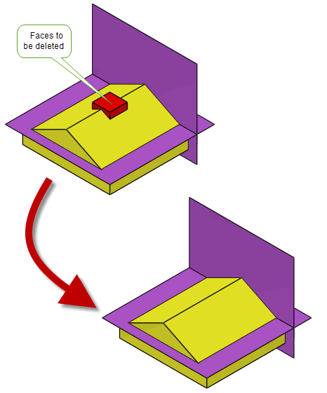Figure 64-1 Deleting faces and healing wounds on a general body
It returns a tracking structure that contains a split tracking record if the operation split the body into multiple bodies (and
allow_disjoint
was PK_LOGICAL_false). It is empty otherwise.
PK_FACE_delete_2 supports a subset of the heal actions described in Section 64.2.1, “Methods for healing wounds” when healing wounds. This section describes the methods supported, and provides examples.
In practice, there are only two heal actions that you need to use when calling PK_FACE_delete_2:
Figure 64-2 shows a simple example that illustrates the difference between these heal actions; the pad can be removed from the pyramid either by capping it, to create a truncated pyramid, or by extending the adjacent faces, to create a complete pyramid.
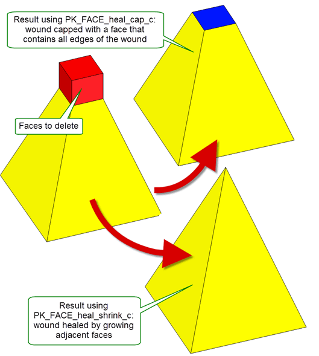Figure 64-2 Deleting faces using “capping” and “allow shrinkage” methods
Figure 64-3 shows an example where the result is the same no matter what heal action is chosen: deleting the faces that comprise the blind hole caps the resulting wound whether a capping face is created, or the adjacent face is extended.
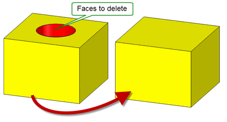Figure 64-3 Healing wounds by capping a hole with a surface
Figure 64-4 shows an example in which the surrounding faces must be grown in order to heal the wound successfully. PK_FACE_heal_cap_c cannot be used in this case because neither a plane nor any single one of the surfaces of the surrounding faces cover the whole wound. PK_FACE_heal_shrink_c is therefore required.
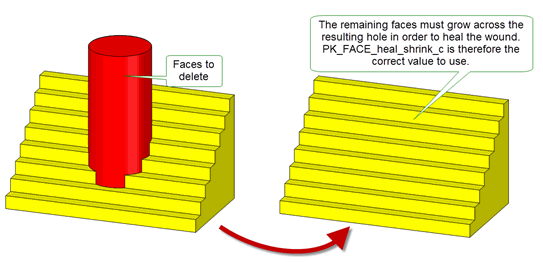Figure 64-4 Healing wounds by growing the faces around the hole: PK_FACE_heal_shrink_c
Figure 64-5 shows an example where some faces surrounding the wound must be grown while others must be shrunk. Again, PK_FACE_heal_shrink_c is the correct
heal_action
to use.
Figure 64-5 Healing wounds growing some faces around a hole while shrinking others: PK_FACE_heal_shrink_c
|
Note: You can also supply PK_FACE_heal_grow_from_parent_c. However, this heals wounds by growing faces in exactly the same way as PK_FACE_heal_shrink_c, as shown in
Figure 64-4, but does not provide the shrinking behaviour shown in
Figure 64-5. |
The wound left when deleting a face is actually a hole that has one or more loops. If the hole contains more than one loop, and if you have set
heal_action
to PK_FACE_heal_shrink_c, Parasolid needs to either deal with these loops individually in order to heal the wound, or deal with them as a single composite, reducing the total number of loops remaining in the healed body. The method used depends on the configuration of the loops in the original body; only one method will yield a valid body. You can use the
heal_loops
option to control how the loops are treated.
Note: You are strongly recommended to set the
heal_loops
option to PK_FACE_heal_loops_auto_c. Using this value instructs Parasolid to decide on the appropriate method for healing the loops. |
Figure 64-6 shows an example where there are several independent loops enclosed by the faces to be deleted. Healing these loops separately preserves them in order to produce the valid body shown.
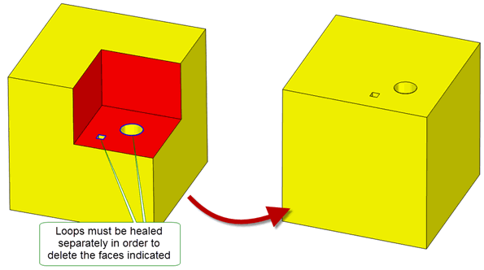Figure 64-6 Healing multiple loops separately when deleting faces
Figure 64-7 and Figure 64-8, by contrast, show examples where the loops inside the faces to be deleted are dependent on each other. These loops need to be healed together in order to produce the valid bodies shown.
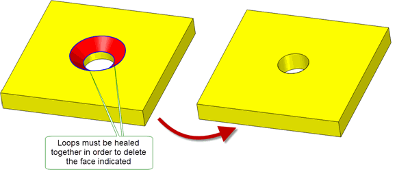Figure 64-7 Healing multiple loops together when deleting faces
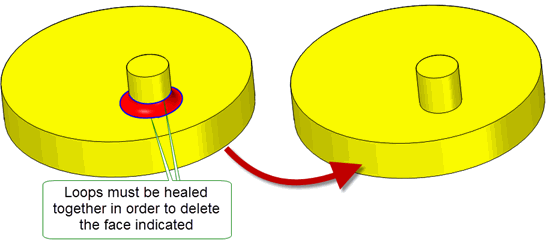Figure 64-8 Healing multiple loops together when deleting faces
Parasolid can heal loops in complex configurations, such as those that contain vertices with three or more edges. In Figure 64-9, although the loops lie solely on the face to be deleted, they contain vertices with three attached edges.
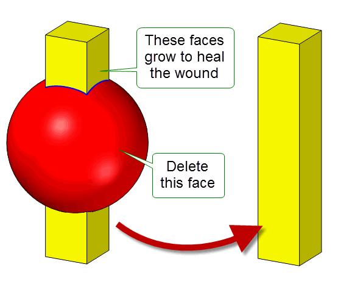Figure 64-9 Healing wounds with loops that contain multiple edge vertices by growing
Parasolid can heal wounds such as this even when faces need to shrink as well as grow. In Figure 64-10 the planar face can be deleted as shown. This shrinks the faces around the rectangular loop even though they have different surfaces attached, while growing the spherical surface to heal the wound.
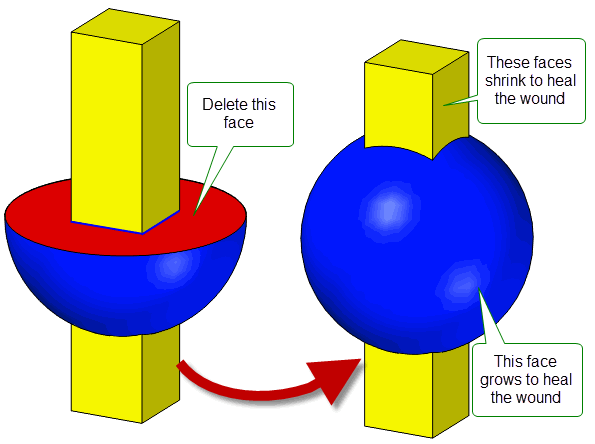Figure 64-10 Healing wounds with loops that contain multiple edge vertices by growing and shrinking
By default, if the healing process splits the original body into multiple components, each component results in a separate body. However, you can ensure that all components remain in a single body using the
allow_disjoint
option.
Figure 64-11 illustrates a simple example in which the middle face of a solid body is deleted. Depending on the setting for
allow_disjoint
, the result is either two spherical solid bodies (the default), or a single disjoint body comprising two disjoint spherical solid components.
Figure 64-11 Returning a single disjoint body when deleting faces
Note: You cannot set this option to PK_LOGICAL_true if
heal_action
is PK_FACE_heal_no_c and
heal_loops
is PK_FACE_heal_loops_separate_c. |
You can use the
repair_fa_fa
option to choose whether to repair face-face inconsistencies that remain after a successful face deletion.
Figure 64-12 Repairing self-intersections that remain after a face deletion
If
repair_fa_fa
is PK_repair_fa_fa_yes_c and the repairs are successful, a report of type PK_REPORT_1_t is returned via the Parasolid Report which contains the following information:
|
This has the value of PK_REPORT_1_fa_fa_repair_c. |
|
Note: If
local_check
is set to PK_LOGICAL_false and PK_repair_fa_fa_yes_c is chosen, PK_ERROR_bad_combination is returned |
You can delete a face from a classic or facet body and heal the resultant wounds with capping faces. These capping faces can be tracked by setting the
track
option to PK_delete_track_cap_c. When set to this value, each capping face created generates a tracking record of type PK_TOPOL_track_create_c that contains the tags of the original faces and the new capping faces.
Figure 64-13 Deleting faces from a facet body and healing the wound with capping faces
Note: The
track
option can only be set to PK_delete_track_cap_c if
heal_action
is set to PK_FACE_heal_cap_c. |
You can delete a face from a body without healing the resultant wounds. This creates rubber faces (i.e a face without geometry) that can be used in later downstream operations. You can track these rubber faces by setting the
track
option to PK_delete_track_rubber_c. When set at this value, each rubber face created generates a tracking record of type PK_TOPOL_track_create_c that contains the tags of the original faces and the new rubber faces.
Figure 64-14 Deleting faces from a body without healing the wound
Note: The option can only be set to PK_delete_track_rubber_c if
heal_action
is set to PK_FACE_heal_no_c. |
It is not possible to heal wounds in a single operation if the set of faces that need to be healed are themselves non-manifold, as shown in Figure 64-15. This operation is possible if the faces are deleted using two calls to PK_FACE_delete_2, each using the PK_FACE_heal_shrink_c option.
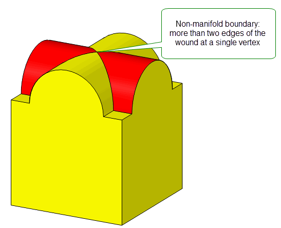Figure 64-15 Non-manifold face set boundary
PK_FACE_delete_2 is not the only tool provided by Parasolid for removing faces from a body. Other tools that you can use are as follows:
|
Delete a set of faces identified using PK_FACE_identify_facesets. See Section 64.5, “Deleting face sets”. |
|
|
Remove faces from a body to create another body. See Section 72.2, “Removing faces to create new bodies”. |
|
|
Remove blend faces from a body. See Section 64.6, “Deleting blend faces”. |
|
|
Removes a set of faces from a sheet. No healing is required when using this function. |
|
|
Deletes faces from a general body. See Section 15.9.3, “Deleting entities from general bodies”. |
By combining these functions with other functionality, you can implement sophisticated tools that let your users edit models interactively and intuitively. For example, you could delete a face from a solid body to leave an open sheet body by first using PK_REGION_make_void to convert the solid body to a sheet, and then using PK_FACE_delete_from_sheet to remove the face in question. Using this strategy avoids the need to heal wounds, letting you implement editing tools that are not possible using PK_FACE_delete_2 alone.
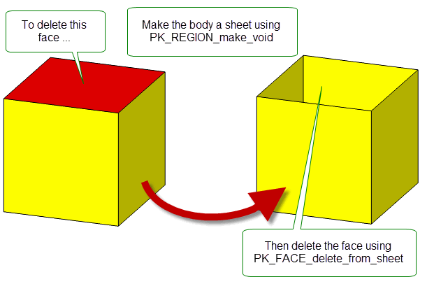Figure 64-16 Deleting a face from a solid to leave an open sheet
You can use PK_EDGE_delete to remove trimmed boundary features such as laminar and wire edges in order to simplify a model. This general purpose deleting function can heal gaps in the resulting model, making it particularly useful for simplification, and producing a model that is better suited, for example, to CAE operations. You can also use PK_EDGE_delete as an alternative to PK_TOPOL_delete_redundant_2 for removing redundant or mergeable edges, in which case it also fills the gap by extending or trimming adjacent edges rather than simply removing the edge. See Section 34.1, “Introduction”, for more information about PK_TOPOL_delete_redundant_2.
|
Note: This functionality does not support facet geometry. |
Figure 64-17 shows several examples that illustrate how PK_EDGE_delete can remove edges and heal the resulting wound. In each example, the edge to be deleted is shown in red.
PK_EDGE_delete can only heal wounds if the 3-space curves of the edges adjacent to the resulting wound can meet when extended and lie in the surface. If this is not the case, the PK_EDGE_delete returns PK_ERROR_cant_heal_wound.
In addition, edges that are shared between two faces can be deleted if the two faces are mergeable; otherwise PK_ERROR_not_implemented is returned.
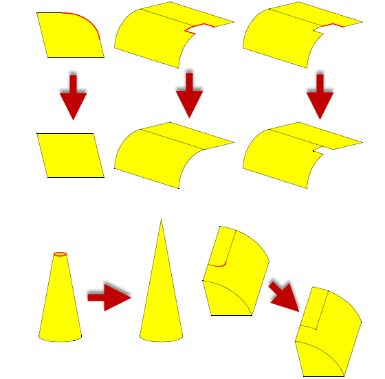Figure 64-17 Deleting edges and healing the resulting wound
You can delete edges in non-manifold bodies so long as the edge you want to delete is in a locally manifold part of the body. Figure 64-18 shows an example in which an edge can be successfully deleted from a non-manifold “T-sheet” body, because the only non-manifold part of the body is the area where three faces meet at a single edge.
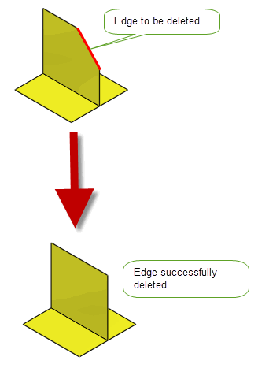Figure 64-18 Deleting edges in a locally manifold part of a non-manifold body
You can remove holes from single and multi-faced sheet bodies using PK_EDGE_delete. Alternatively, providing that the hole lies completely within a single face, you can use PK_LOOP_delete_from_sheet_body to specify a list of interior loops to delete.
|
Note: PK_EDGE_delete does not support facet geometry. |
PK_EDGE_delete_o_t contains an
update
option to maintain consistency when rebuilding models built in older versions of Parasolid. See Section 63.5.2, “Update control”, for information.
You can use PK_FACE_delete_facesets to delete face sets from a body. These face sets could typically be those identified by calls to either PK_BODY_find_facesets, PK_BODY_identify_details, or PK_FACE_identify_blends.
PK_FACE_delete_facesets receives and returns the following arguments:
n_facesets facesets |
The number of face sets to delete, together with an array of those face sets. Each element in |
options |
PK_FACE_delete_facesets takes a number of options, available in PK_FACE_delete_facesets_o_t. The options available are as follows:
allow_disjoint |
If PK_LOGICAL_true, PK_FACE_delete_facesets returns a disjoint body if deleting face sets splits the body into two or more components. Default: PK_LOGICAL_false. |
heal_action |
If PK_FACE_heal_yes_c, PK_FACE_delete_facesets attempts to heal the body using any available method after deleting the face sets. This may split the body into two or more bodies. If PK_FACE_heal_no, wounds are not healed, and each deleted face set is replaced by a single rubber face. If any other value, only the specified |
n_details details |
These options are used to pass detail types to PK_FACE_delete_facesets for the face sets you want to delete. If you know the detail type of each of the face sets you are passing into the function, passing this information as well can help performance.
The
Setting |
tolerance |
|
update |
Update switch to maintain consistency when rebuilding models built in older versions of Parasolid. See Section 63.5.2, “Update control”, for information. Default: PK_local_ops_update_default_c. |
PK_FACE_delete_blends is used to delete blend faces. In general, PK_FACE_delete_blends is intended for deleting either single blend faces or complete chains of blends. The faces supplied must all come from the same body. PK_FACE_delete_blends takes into account topological changes that occur during blending in order to provide a delete operation that is as close to an inverse blend as possible. Using this information, PK_FACE_delete_blends can delete a higher proportion of faces than PK_FACE_delete_2.
If blend faces cannot be deleted, PK_ERROR_cant_heal_wound is returned and in cases where specific blend faces can be identified as having caused the failure, a Parasolid Report of type PK_REPORT_1_t is generated with a status of PK_REPORT_1_bad_blend_c indicating which faces could not be deleted. See Chapter 11, “Using Reports”, for more information about the Parasolid Report mechanism.
Note: Because chamfer blends do not maintain any information about the original edge, there are some configurations in which, though a rolling ball-like blend could be deleted, a chamfer blend cannot. In most cases, you can use the
unders_data
option to handle this. See Section 64.6.4, “Specifying underlying entities for blends to be deleted”, for information. This operation can also be performed using PK_FACE_delete_2 instead: see Section 64.1, “Introduction”, for details. |
Figure 64-19 Before and after deleting the faces created by a blend operation
You can delete blend faces in non-manifold bodies so long as the blend you want to delete is in a locally manifold part of the body as shown in Figure 64-20.
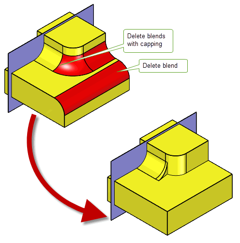Figure 64-20 Deleting blends on locally manifold bodies
|
Warning: PK_FACE_delete_blends assumes that the faces specified have been created by a blend operation. It is not suitable as a tool for general face deletion. |
A PK_FACE_delete_blends_o_t options structure contains the following options that let you control blend deletion:
check_fa_fa |
Check face-face consistency on the resulting body. See Section 64.6.1, “Checking face-face consistency”, for more information. |
simplify |
Simplify the surfaces of adjacent blend faces in the model. See Section 64.6.2, “Simplifying adjacent blend faces”, for more information. |
cap cap_data |
Whether to add cap faces to any resulting wounds. See Section 64.6.3, “Adding cap faces to heal wounds”, for more information. |
update |
Update switch to maintain consistency when rebuilding models built in older versions of Parasolid.See Section 63.5.2, “Update control” for information. Default: PK_local_ops_update_default_c. |
unders_data |
Optional sub-structure to allow you to specify blends together with their underlying faces. See Section 64.6.4, “Specifying underlying entities for blends to be deleted”, for information. |
You can also use PK_FACE_delete_facesets to delete constant-radius rolling-ball blends from a body. See Section 64.5, “Deleting face sets”for details.
You use the
check_fa_fa
option to specify whether face-face consistency checking should be performed on the body resulting from the operation. The permitted values are:
If face-face consistency checking is performed, then altered faces are checked against each other and against unaltered faces.
You use the
simplify
option to choose whether to simplify the surfaces of blend-like faces that are adjacent to any deleted blends. You can use this option to eliminate any B-surfaces from suitable faces adjacent to those being deleted.
With this option switched on, healing the gaps created when deleting blends is more likely to be successful, because blend surfaces can be extended more easily than B-surfaces. Using the option simplifies the overall model, and can improve performance for downstream operations. In some cases, it can improve the chance of PK_FACE_delete_blends succeeding.
Switching the
simplify
option on does not make any significant difference to the shape of the model, since replacement surfaces are always within tolerance of the original surface.
This option only simplifies faces that satisfy all three of the following conditions:
Faces that satisfy these conditions have their surfaces replaced by either blend, torus, or cylinder surfaces as appropriate.
The permitted values for the option are:
|
Try to simplify blend surfaces that are vertex-adjacent to blends to be deleted. |
|
As mentioned in Section 64.6, “Deleting blend faces”, PK_FACE_delete_blends is intended for deleting either single blend faces or complete chains of blends. Sometimes you might just want to delete a few blends from a longer chain; in particular, you might want to delete a number of blends in order to add a new feature to the model in the area of those blends, before reblending that area. This section describes how to delete such blends.
You can delete a partial chain of blends using the
cap
option. By setting this option to PK_blend_delete_cap_planar_c, Parasolid creates planar cap faces with which to heal the wounds left by deleting only part of a chain of blends.
Note: By default, any cap faces created by this option are placed approximately 10% from the end of the blend; however, this can be controlled using the
cap_data
option. |
The effect of using this option is shown in Figure 64-21. Here, the middle blend face in a chain of three blends has been deleted, with a view to editing the model in the area of the deleted blend before reblending.
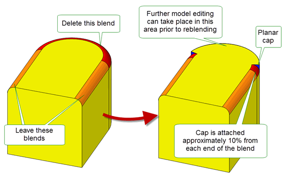Figure 64-21 Creating capping faces when deleting blends
In addition, you can control where blend caps are added using the
cap_data
option. This is a structure containing the following information:
Figure 64-22 shows an example where two blend chains have been applied to a body. Suppose that you want to delete the blend with the larger radius (which was also applied last), as indicated. You may want to do this in order to resize the blend with the smaller-radiused blend (shown in orange), for example.
You can remove the relevant part of this blend using the
cap
option. However, doing this without supplying any
cap_data
creates a very small unwanted cap face, as shown in
Figure 64-22. This cap face can be eliminated by supplying
cap_data
that specifies that the blend should be kept at one end only.
Figure 64-22 Using cap controls to remove unwanted faces
Better still, Figure 64-23 shows how you can create a result in which the majority of the larger blend is retained. You can do this by specifying where you want the blend to be removed, rather than where you want it to be retained. Again, no unwanted cap face is created in the region of the blend with the smaller radius.
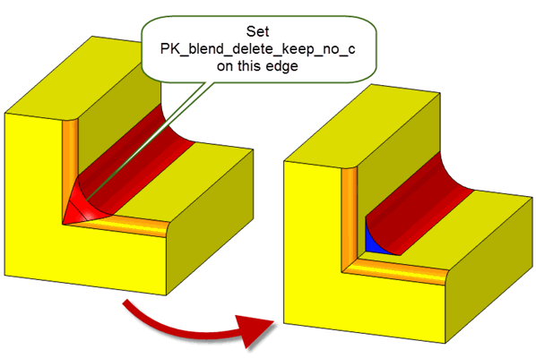Figure 64-23 Using cap controls to remove minimal blend material
Using the
type
field, you can choose the type of capping you want to place at the edge of a blend. This field takes the following values:
Figure 64-24 shows examples of using the
type
field.
Figure 64-24 Using the type field to create different placements of cap faces
You can use the
unders_data
sub-structure to specify underlying entities for some of the blends you wish to delete. Specifying underlying entities for some or all of the blends you are deleting facilitates:
Figure 64-25 Deleting cliff blends and replacing the missing underlying faces
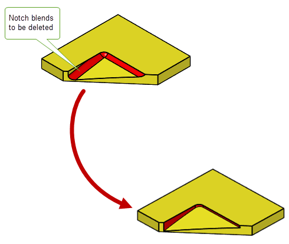Figure 64-26 Deleting notch edge blends
The
unders_data
sub-structure takes the following fields:
n_blends blends |
The blends for which you want to specify underlying entities. These should be faces that are also supplied in the |
unders |
An array of arrays of entities. The entities that you need to supply depend on the type of blend you are deleting. See PK_blend_delete_unders_data_t in the PK Interface Programming Reference Manual for more information. Note: If you are deleting cliff or notch blends the underlying entities of the blend must be supplied for the delete operation to succeed. |
| <<< Overview of Editing Models | Chapters | Identifying And Simplifying Model Details >>> |